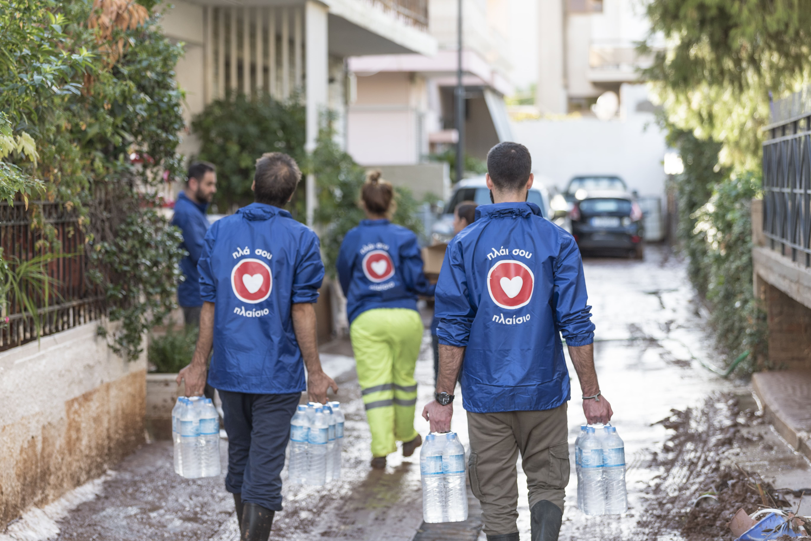

Στις πλημμύρες που έπληξαν τη Μάνδρα Αττικής τον Νοέμβριο του 2017, πολλοί συμπολίτες μας είδαν τις περιουσίες και τα σπίτια τους να καταστρέφονται. Θέλοντας να προσφέρουμε ουσιαστική βοήθεια & συμπαράσταση, μαζί με τους εθελοντές της ομάδας «Πλάι σου» βρεθήκαμε κοντά στους πλημμυροπαθείς, μοιράζοντας ζεστό φαγητό, νερό, προμήθειες και προσωρινή στέγαση.